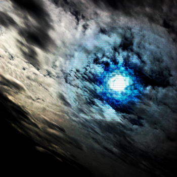

Conscious Cliché
by Synergist - Lyrics by CutcH*

high tide's come in again
we're up to our necks in it
I hope you're ready to dive right in
we'll make the best of it
that's who we are
the time is right for the world
now vindicated, to take back control
the stars have aligned, and they're pullin' their lines with the undertow
with high tide rising beside you
you're sinking like a stone
your pretensions weigh you down
tied to the floor
cause high tide's come in again
and we're up to our necks in it
I hope you're ready to dive right in
we'll make the best of it
that's who we are
(when the tide's coming in)
that's who we ought to be
(this is not a philosophy)
that's who we are
it's all we know how to be
now you may decide you can float
carried to sea with the brightest of hopes
drifting along away from the shore
on a child's balloon
& pop
to our necks in it all...
to our necks in all the promises
cowards and props
the innocent and the lost
when high tide's rising beside you
you've got to swim to reach your goals
I tread the line between the depths and the skies
I know it's cliché but..
the tide's come in again
and we're up to our necks in it
I hope you're ready to dive right in
we'll make the best...
that's who we are
(when the tide's coming in)
that's who we ought to be
(this is not a philosophy)
that's who we are
it's all we know how to be *CutcH is Craig McCutcheon |